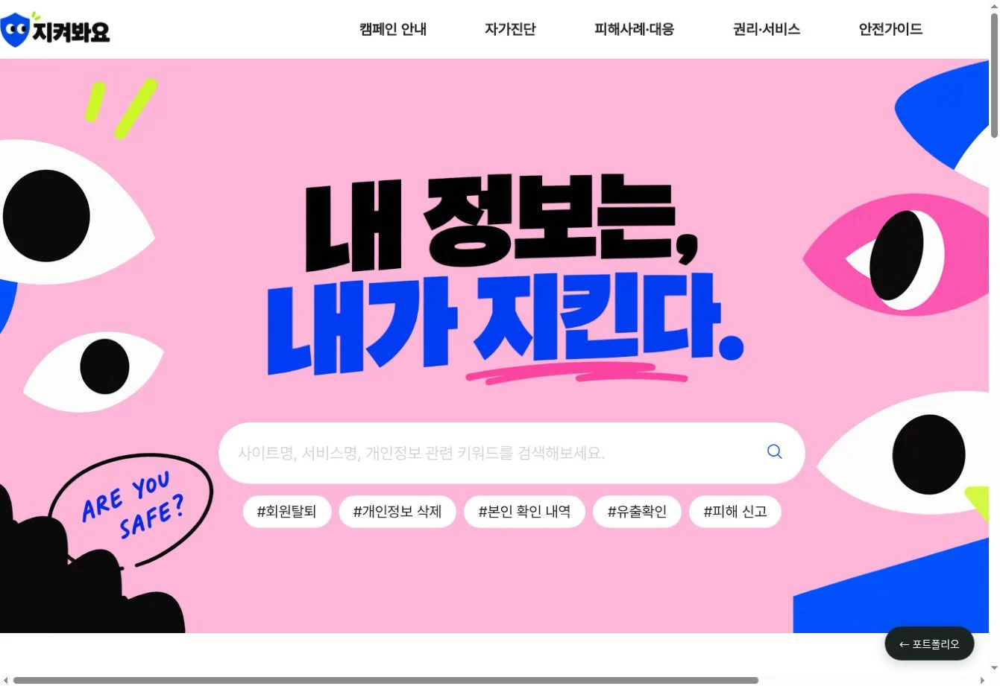
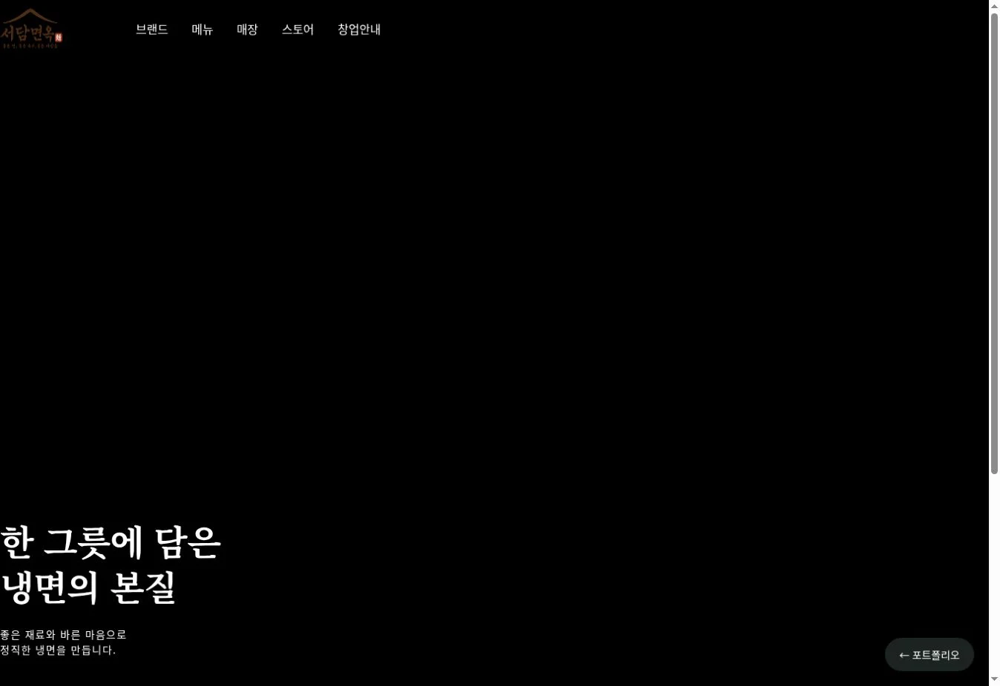
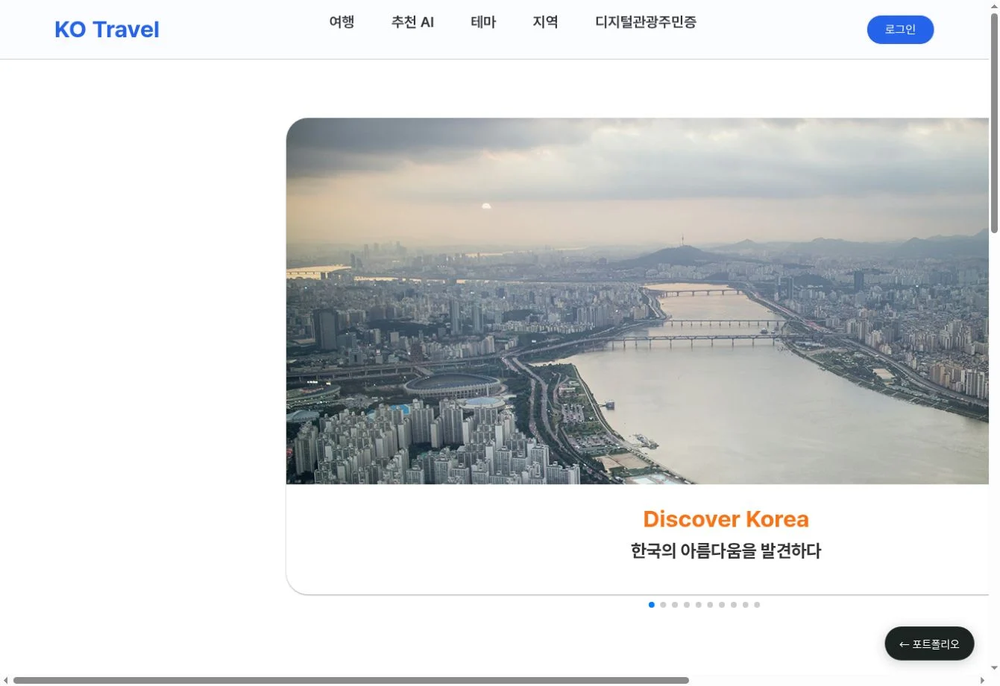
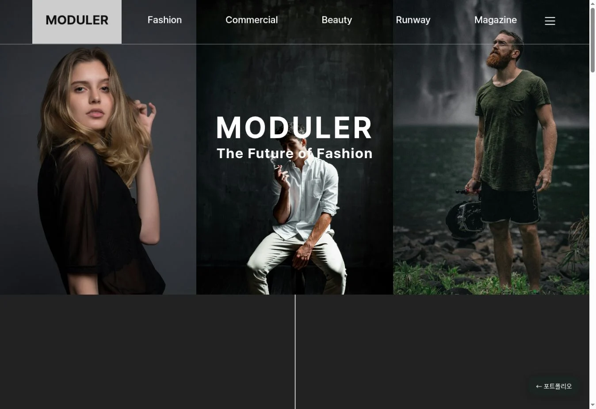
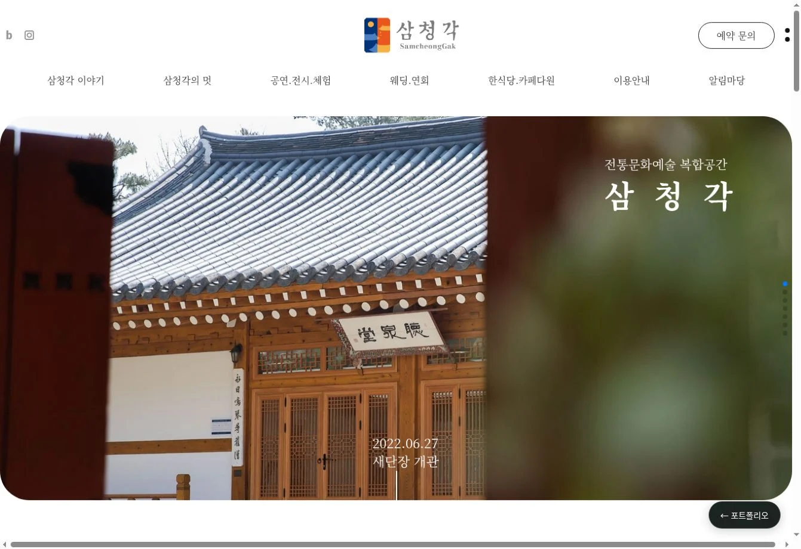

사이트 열기 ↗지켜봐요
↗개인정보 보호를 더 쉽게
개인정보 보호 정보를 탐색하고 자가진단으로 확인하는 캠페인 웹사이트.
작업물 살펴보기 ↗
사이트 열기 ↗개인정보 보호 정보를 탐색하고 자가진단으로 확인하는 캠페인 웹사이트.
작업물 살펴보기 ↗
사이트 열기 ↗메뉴부터 매장, 온라인 스토어와 가맹 안내까지 연결한 냉면 브랜드 웹사이트.
작업물 살펴보기 ↗
사이트 열기 ↗여행 정보와 추천 콘텐츠를 담은 관광 웹페이지 퍼블리싱 작업.
작업물 살펴보기 ↗
사이트 열기 ↗패션 이미지 중심의 메인 화면과 Fashion 페이지 퍼블리싱 작업.
작업물 살펴보기 ↗
사이트 열기 ↗공간과 문화를 소개하는 삼청각 웹페이지 퍼블리싱 작업.
작업물 살펴보기 ↗각 작업물을 클릭하면 실제 제작한 웹페이지를 볼 수 있습니다. 기존 작업물의 일부 메뉴는 시연용입니다.
촬영 현장에서 쌓은 시선을
웹 디자인과 퍼블리싱으로 이어갑니다.
드라마·영화 촬영팀과 단편영화 촬영감독 경험을 바탕으로, 화면의 구성과 시각적인 흐름을 고민합니다. 이곳에 디자인과 코드로 구현해온 작업들을 모았습니다.
다음 장면도,
계속 만들어갑니다.